Handbuch
Overland-Navi · Karte, Navi und Stellplätze für unterwegs, auch ohne NetzHier steht alles, was du zum Loslegen brauchst. Tipp auf ein Kapitel, um direkt hinzuspringen. Die Bilder sind vom iPhone; auf dem iPad sieht alles gleich aus, nur breiter.
1Einrichten
Overland-Navi ist eine Web-App: Sie kommt nicht aus dem App Store, sondern wird aus dem Browser auf den Startbildschirm gelegt. Danach startet sie wie jede andere App, im Vollbild und auch ohne Internet.
iPhone und iPad
- pokaxhontas.github.io/overland-navi in Safari öffnen.
- Unten (iPhone) oder oben (iPad) auf Teilen ⬆︎ tippen → Zum Home-Bildschirm.
- Die App vom Home-Bildschirm starten und den Standort erlauben („Beim Verwenden der App“).
Android
- Die gleiche Adresse in Chrome öffnen.
- Menü ⋮ → App installieren (oder „Zum Startbildschirm hinzufügen“).
- Die App starten und den Standort erlauben.
Zugang
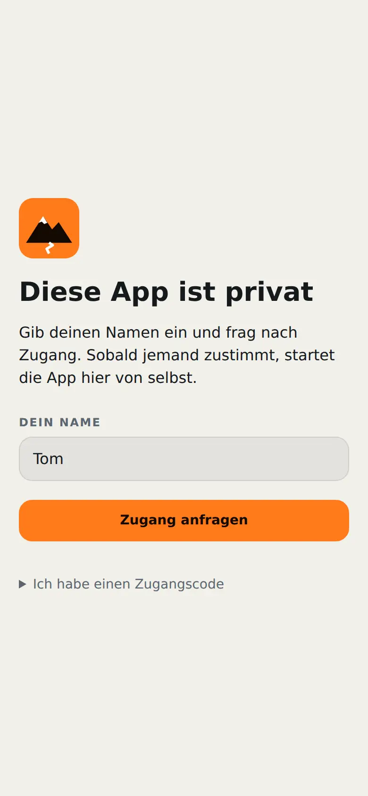
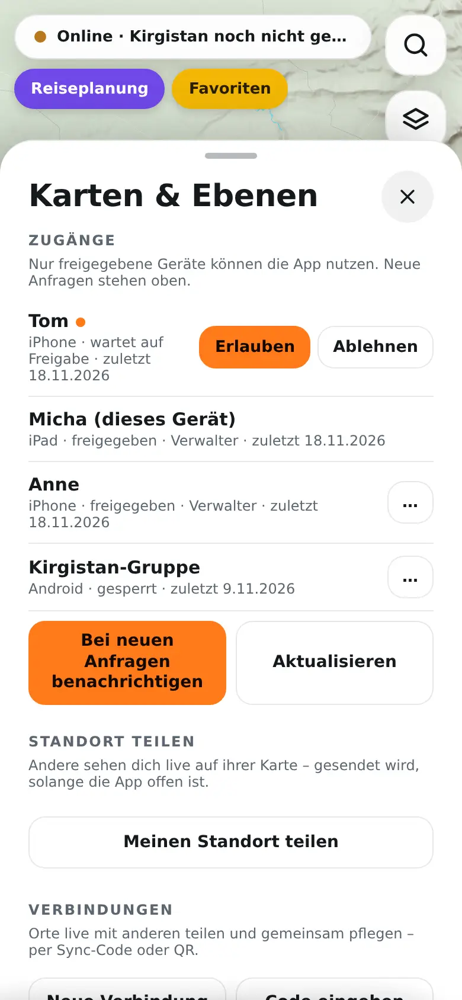
Die App ist privat. Beim ersten Öffnen erscheint „Diese App ist privat“: Namen eingeben und Zugang anfragen. Sobald jemand mit Verwalter-Rechten zustimmt, startet die App von selbst. Der Zugang gilt für dieses eine Gerät.
Verwalter sehen im Menü den Bereich Zugänge (mit der Zahl neuer Anfragen): Neue Anfragen stehen oben mit Erlauben und Ablehnen. Über … lässt sich ein Gerät sperren, wieder freigeben, entfernen oder selbst zum Verwalter machen.
Mit Bei neuen Anfragen benachrichtigen bekommen Verwalter eine Mitteilung aufs Handy, sobald jemand Zugang möchte. Wer wartet, kann sich ebenso benachrichtigen lassen, wenn die Freigabe da ist – die App darf dafür zwischendurch geschlossen sein. Auf dem iPhone geht das nur mit der App vom Home-Bildschirm.
2Der Bildschirm im Überblick
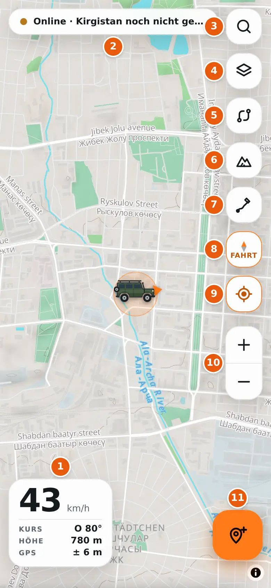
- 1Tacho: Tempo, Kurs, Höhe und GPS-Genauigkeit. Nach links wischen klappt ihn weg, Antippen holt ihn zurück.
- 2Status: zeigt, ob du online bist und ob das Gebiet, in dem du gerade bist, offline geladen ist.
- 3Suche: Orte, Gipfel, Pässe, Seen, Restaurants, Koordinaten – und „In der Nähe“ (Supermarkt, Geldautomat, Werkstatt …).
- 4Menü: deine Listen, Kategorien und Tracks, Teilen, Karte & Ebenen, Offline-Karten, Ansagen – und dieses Handbuch. Mehr dazu gleich unten.
- 5Route planen: Start, Zwischenstopps und Ziel, mit Auto, zu Fuß oder mit Bus & Bahn.
- 6Wandern: Wanderwege, Hütten und Biwaks, Sehenswertes und Tourenvorschläge.
- 7Route zeichnen: eine eigene Strecke mit dem Finger auf die Karte legen.
- 8Kompass: N = Norden oben, FAHRT = Karte dreht sich in Fahrtrichtung.
- 9Mein Standort: springt zu dir und folgt dir wieder.
- 10Zoom: rein und raus (geht natürlich auch mit zwei Fingern).
- 11Ort speichern: Stellplatz, Wasser, Diesel, Werkstatt … für später merken.
Außerdem: Lange auf die Karte drücken legt dort sofort einen neuen Ort an. Ein Antippen von Symbolen, Wegen und Tracks zeigt ihre Infos. Fenster und Leisten lassen sich mit dem Finger wegwischen (nach unten oder oben) und an ihrem kleinen Rest wieder hervorholen.
Das Menü
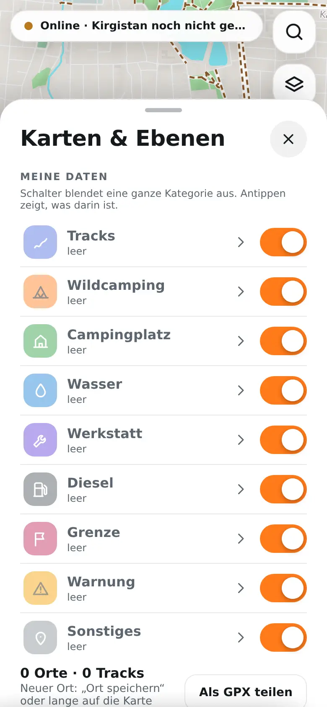
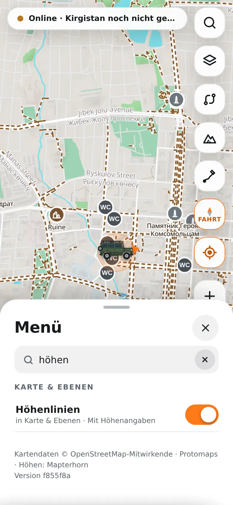
- Das Menü ist in Bereiche geordnet: Meine Daten (Listen, Kategorien, Tracks, Papierkorb), Teilen (Standort, Verbindungen), Karte & unterwegs (Karte & Ebenen, Offline-Karten, Navigation & Ansagen) und App (Aussehen, Importieren, Hilfe).
- Unter jedem Bereich steht eine Kurzinfo, z. B. welche Kartenart an ist oder wie viele Orte du hast. Antippen öffnet den Bereich.
- Das Suchfeld oben findet jede Einstellung („Höhenlinien“, „Stimme“) und deine Orte nach Namen. Schalter lassen sich direkt in den Ergebnissen umlegen.
- Nach rechts wischen geht eine Ebene zurück, im Hauptmenü schließt es das Menü. ‹ Zurück und ✕ gehen natürlich auch.
3Karten offline laden
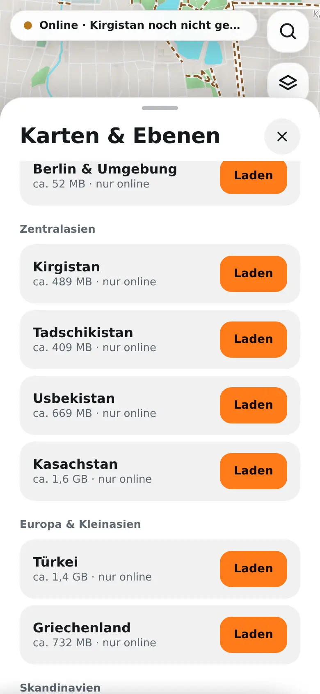
Damit die App ohne Netz funktioniert, lädst du vorher die Gebiete, durch die du fährst. Am besten im WLAN und am Strom.
- Menü öffnen und Offline-Karten antippen.
- Beim gewünschten Gebiet auf Laden tippen. Die ungefähre Größe steht daneben.
- App offen lassen, bis „✓ Offline verfügbar“ erscheint. Bricht der Download ab, geht es mit Fortsetzen an der gleichen Stelle weiter.
Mit einem Gebiet kommen automatisch mit: Karte mit Höhenlinien und Gelände, Suche, Wanderwege und das Straßennetz für die Routenberechnung. Bei Gebieten, die du früher schon geladen hast, steht ein Knopf wie Wanderwege & Offline-Routen laden – einmal antippen, dann ist alles auf dem neuesten Stand.
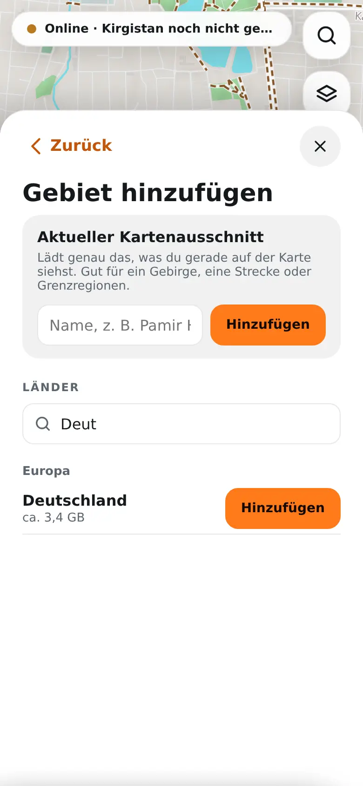
Weitere Länder und eigene Gebiete
Unter der Liste auf Land oder Gebiet hinzufügen tippen:
- Land suchen und antippen – jedes Land der Welt ist möglich.
- Aktueller Kartenausschnitt: lädt genau das, was du gerade siehst. Praktisch für eine Strecke, ein Gebirge oder ein Grenzgebiet. Vorher Karte passend verschieben und zoomen, Namen eingeben, Hinzufügen.
Ganz unten zeigt die App, wie viel Speicher belegt ist. Ein geladenes Gebiet löschst du mit Löschen → Wirklich löschen?.
4Suchen & In der Nähe

Tippe auf die Lupe und gib ein, was du suchst: einen Ort, einen Gipfel, einen Pass, einen See, eine Adresse, ein bestimmtes Restaurant – oder Koordinaten wie 42.49, 78.39.
- Einen Treffer antippen zeigt ihn auf der Karte mit einer kleinen Karte: Route berechnet sofort den Weg dorthin, ✕ schließt sie.
- Reihenfolge der Treffer: ganz oben steht, was genau so heißt wie deine Eingabe, dann was so anfängt, dann der Rest. Bei gleich gutem Treffer kommen deine eigenen Orte zuerst, dann vom Großen zum Kleinen (Land, Insel oder Region vor Stadt, Stadt vor Dorf oder Gipfel) und zuletzt das Nähere vor dem Ferneren.
- Unter dem Suchfeld stehen deine letzten Suchen.
- Ohne Internet sucht die App in den geladenen Offline-Gebieten.
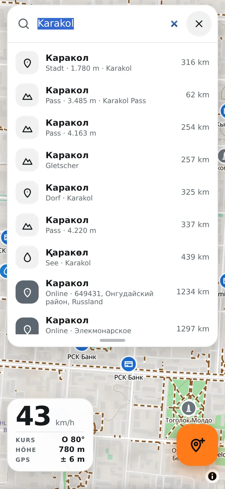
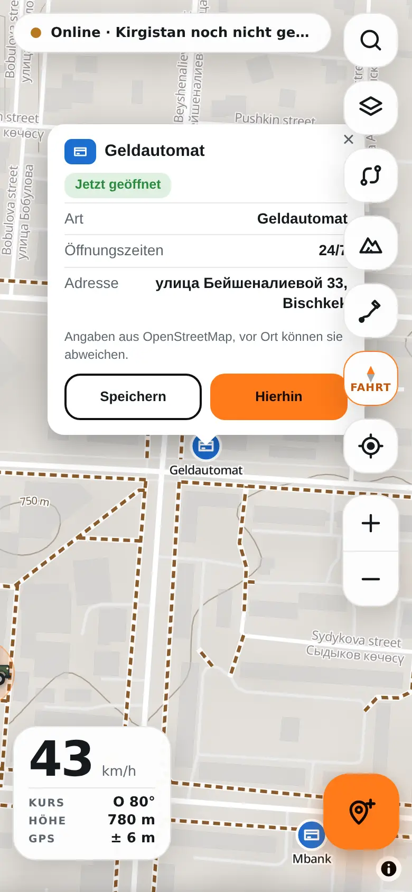
In der Nähe
Die runden Knöpfe unter dem Suchfeld suchen im aktuellen Kartenausschnitt: Supermärkte, Restaurants, Cafés, Geldautomaten, Banken, Tankstellen, Werkstätten, Baumärkte, Apotheken, Ärzte, Trinkwasser, Wäschereien, Toiletten & Duschen, SIM-Karten, Post und Camping & Unterkünfte. Antippen zeigt Öffnungszeiten (mit „jetzt geöffnet“), Telefon, Webseite und Adresse, soweit bekannt.
Oben erscheint ein Hinweis mit der Anzahl der Treffer; das ✕ darin blendet sie wieder aus.
5Route planen & navigieren

- Auf Route planen tippen. Start ist automatisch Mein Standort.
- Ins Zielfeld tippen und suchen – oder Auf der Karte wählen: Karte unter die Nadel schieben, Punkt übernehmen.
- Mit + Zwischenstopp hinzufügen weitere Halte einfügen. Am Griff ≡ festhalten und ziehen, um die Reihenfolge zu ändern; der Pfeil oben tauscht Start und Ziel.
- Wählen: 🚙 Auto, 🥾 Zu Fuß oder 🚆 Bus & Bahn, und beim Auto Schnellste, Kürzeste oder Pisten (nimmt unbefestigte Wege gern mit).
- Route berechnen – oder Luftlinie, wenn es gar keinen Weg gibt.
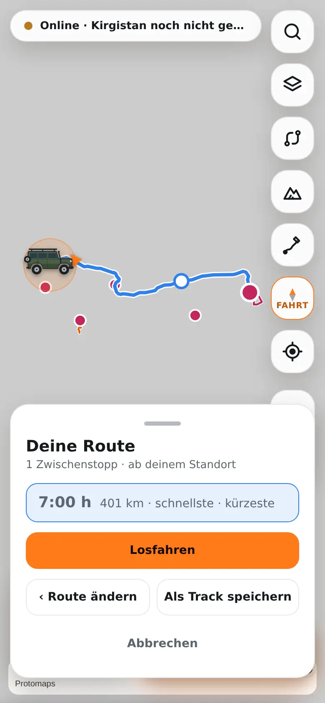
Route auswählen
Meist bekommst du mehrere Vorschläge mit Fahrzeit und Länge. Du wählst einen aus, indem du ihn in der Liste oder direkt seine Linie auf der Karte antippst. Hinweise wie ⛴ Fähre, € Maut oder ohne Maut stehen direkt dabei. Die Auswahl lässt sich nach unten wischen, um mehr Karte zu sehen, und wieder hochziehen. Nach links hinausgewischt schließt sie sich, genau wie mit Abbrechen.
- Losfahren startet die Navigation.
- ‹ Route ändern führt zurück in den Planer.
- Als Track speichern legt die Strecke in deine Tracks, z. B. zum Vorausplanen.
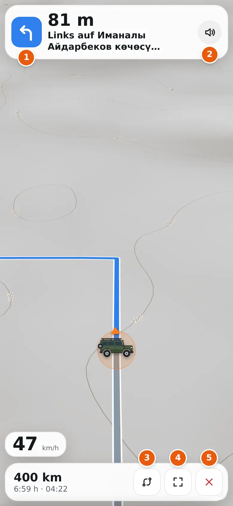
Während der Fahrt
- 1Nächster Hinweis mit Entfernung, bei Autobahnen auch die Fahrspuren.
- 2Ansagen an oder aus.
- 3Ändern: Zwischenstopp einfügen oder neues Ziel.
- 4Übersicht: ganze Strecke zeigen, danach folgt die Karte dir wieder.
- 5Beenden.
Unten stehen Restweg und Ankunftszeit. Kommst du von der Route ab, rechnet die App nach ein paar Sekunden neu – mit Netz über die Routenserver, ohne Netz selbst auf dem Gerät.
Vor mautpflichtigen Abschnitten kommt ein Hinweis. Stimme, Tempo, Navi-Kamera und 3D-Ansicht stellst du im Menü im Bereich Navigation & Ansagen ein.
6Zu Fuß, Bus & Bahn
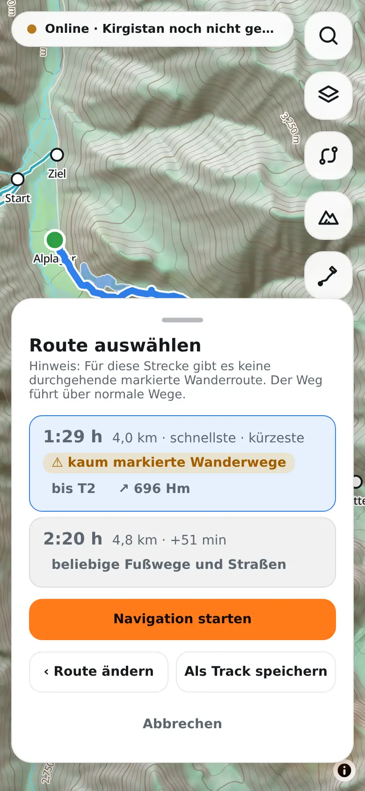
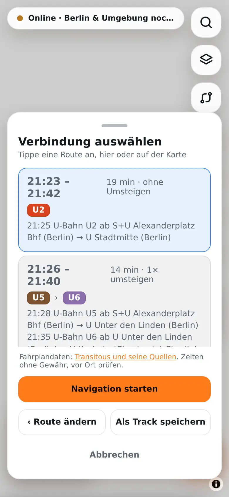
🥾 Zu Fuß
Die App bevorzugt markierte Wanderwege und Fußwege und zeigt, wie viel der Strecke auf markierten Wanderwegen und wie viel an Straßen entlangführt, dazu die schwierigste Stelle (T1–T6) und die Höhenmeter. Gibt es keinen durchgehenden Wanderweg, steht ein Hinweis dabei. Wie schwierig die Wege sein dürfen, stellst du im Wander-Menü unter „Zeige Wege bis“ ein.
🚆 Bus & Bahn
Zeigt Verbindungen mit Abfahrt, Ankunft, Linien und Umstiegen. Unter Jetzt / Abfahrt / Ankunft kannst du eine andere Zeit wählen – nachts fahren z. B. manche U-Bahnen nicht. Während der Fahrt sagt die App Ein- und Aussteigen an. Bus & Bahn braucht Internet.
7Ohne Internet
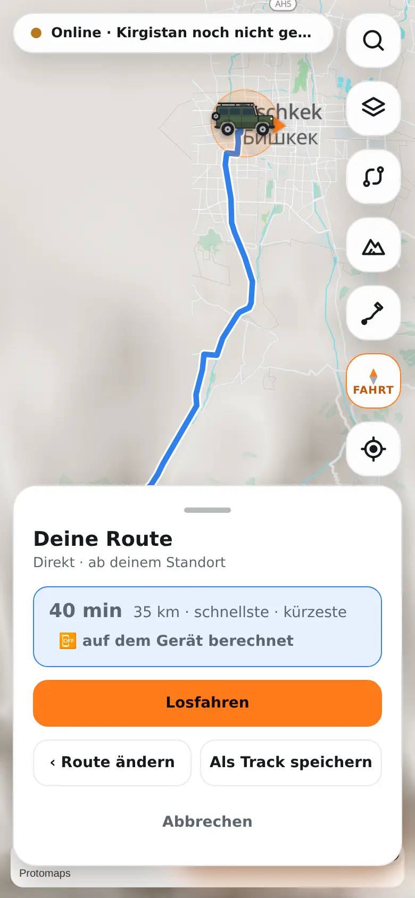
Ist ein Gebiet offline geladen, rechnet die App Routen mit dem Auto und zu Fuß selbst auf dem Gerät, mit Abbiegehinweisen, Ansagen und Neuberechnung. Solche Routen sind mit 📴 auf dem Gerät berechnet markiert. Das springt auch ein, wenn die Routenserver mal nicht antworten.
| Funktion | Ohne Netz |
|---|---|
| Karte, Höhenlinien, Gelände | ✓ in geladenen Gebieten |
| Suche nach Orten, Gipfeln, Seen … | ✓ in geladenen Gebieten |
| Route mit Auto oder zu Fuß, Ansagen | ✓ in geladenen Gebieten |
| Wanderwege, Hütten, geladene Touren | ✓ |
| Eigene Orte, Tracks, Route zeichnen | ✓ |
| In der Nähe (Supermarkt, Geldautomat …) | nur was auf der Karte steht |
| Luftbild und Hybrid | ✗ nur online |
| Bus & Bahn | ✗ nur online |
8Orte speichern
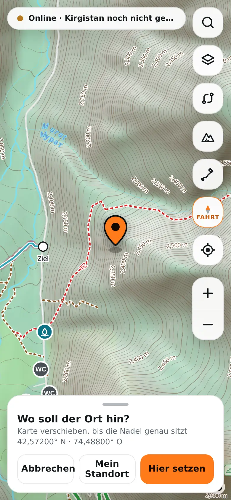
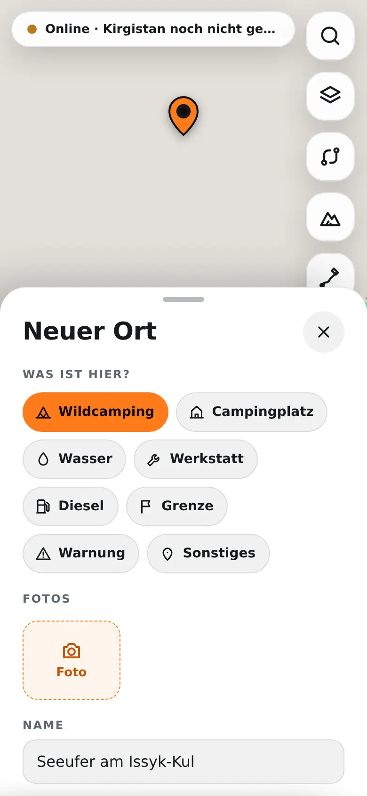
- Auf Ort speichern tippen. Die App fragt „Wo soll der Ort hin?“: Karte verschieben, bis die Nadel genau sitzt, und Hier setzen – oder Mein Standort für die aktuelle Position. So kannst du auch vorab Orte eintragen, an denen du gar nicht bist.
- Oben die Liste wählen (normal: „Meine Orte“) und bei Was ist hier? die Kategorie: Wildcamping, Campingplatz, Wasser, Werkstatt, Diesel, Grenze, Warnung, Natur & Aussicht, Strand & Küste … oder mit + Neue Kategorie eine eigene. Mehr dazu unter Listen & Kategorien.
- Fotos, Name, Sterne, Merkmale (eben, windgeschützt, Handynetz, nur mit Allrad …) und eine Notiz ergänzen – alles freiwillig.
- Speichern. Die Höhe trägt die App selbst ein.
Schneller geht es mit langem Drücken auf die Karte. Einen gespeicherten Ort antippen öffnet ihn wieder – zum Ändern, Position verschieben, Hierhin navigieren oder Löschen.
9Listen & Kategorien
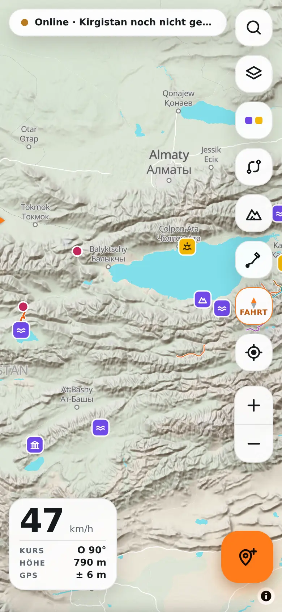
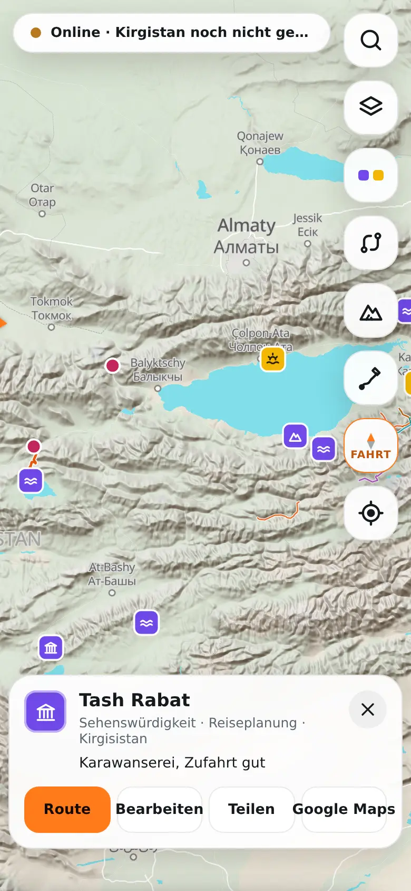
Jeder Ort gehört zu einer Liste und hat eine Kategorie:
- Listen sind Sammlungen wie „Meine Orte“, „Reiseplanung“ oder „Favoriten“. Was du unterwegs selbst einträgst, landet in Meine Orte und erscheint rund. Orte aus anderen Listen sind eckig in der Farbe ihrer Liste.
- Kategorien sagen, was ein Ort ist: Wildcamping, Wasser, Natur & Aussicht, Strand & Küste, Sehenswürdigkeit, Essen & Trinken … Das Symbol im Kreis oder Quadrat zeigt sie.
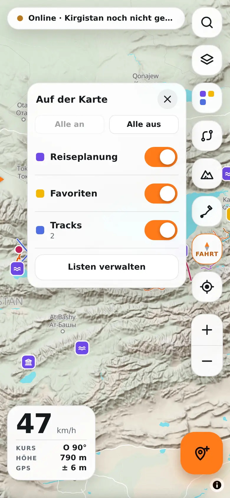
Für unterwegs gibt es in der rechten Knopfleiste den Listen-Knopf (kleine Farbquadrate, eins pro Liste; blass heißt ausgeblendet). Antippen öffnet daneben ein Fenster mit einem Schalter pro Liste – so blendest du eine ganze Liste mit zwei Tipps aus oder ein, ohne ins Menü zu gehen. Listen verwalten führt ins Menü, wo du Listen anlegst, umbenennst und löschst. Der Knopf erscheint, sobald du Orte in mindestens zwei Listen hast.
Ein Ort aus einer Liste öffnet ein Kärtchen mit Route, Bearbeiten, Teilen und Google Maps.
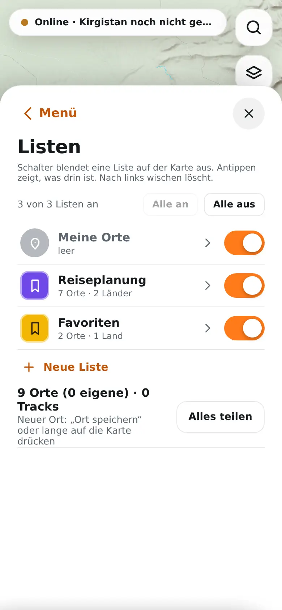
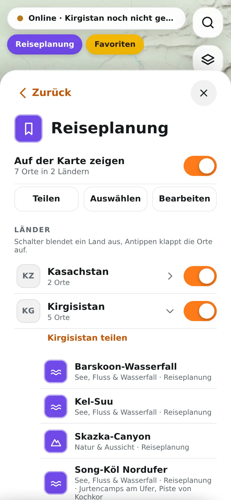
Im Menü
- Unter Meine Daten stehen die Bereiche Listen, Kategorien und Tracks. Jede Liste, Kategorie und jeder Track hat einen Schalter fürs Ein- und Ausblenden.
- Eine Liste antippen: Du siehst ihre Länder mit Anzahl. Jedes Land hat einen eigenen Schalter, Antippen klappt die Orte auf. So blendest du z. B. alles außer Island aus.
- Bearbeiten ändert Name und Farbe einer Liste oder löscht sie. Kategorien kannst du genauso umfärben.
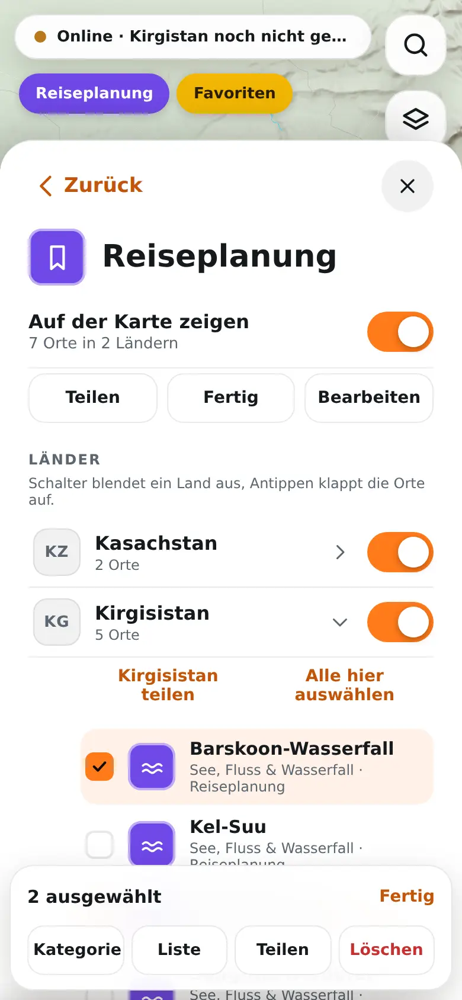
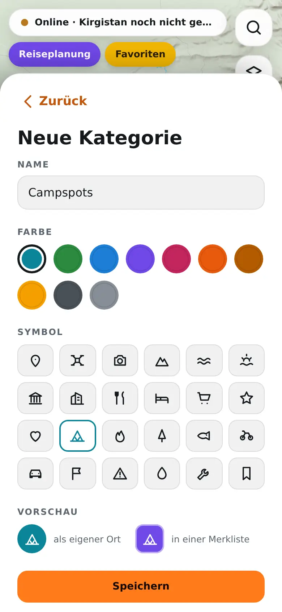
Aufräumen und umsortieren
- Einen Ort: öffnen und oben bei Liste und Was ist hier? neu wählen.
- Viele Orte: in einer Liste oder Kategorie auf Auswählen, Orte antippen (oder „Alle hier auswählen“ in einem Land), dann unten Kategorie, Liste, Teilen oder Löschen.
- Eigene Kategorie: + Neue Kategorie im Menü oder beim Eintragen eines Orts. Name, Farbe und Symbol wählen – z. B. „Campspots“. Wird eine eigene Kategorie gelöscht, kommen ihre Orte nach „Sonstiges“.
- Eigene Liste: + Neue Liste. Beim Löschen einer Liste kommen ihre Orte mit in den Papierkorb.
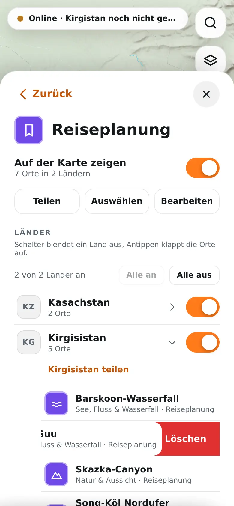
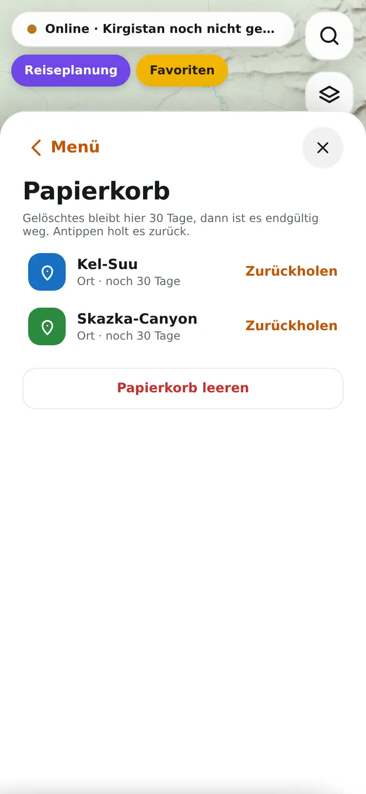
Löschen und Papierkorb
- Kurz nach links wischen über einen Ort, eine Liste, eine eigene Kategorie oder einen Track zeigt den roten Knopf Löschen.
- Ganz nach links durchwischen löscht sofort.
- Gleich danach erscheint Rückgängig – ein Tipp, und es ist wieder da.
- Alles Gelöschte landet im Papierkorb (Menü → Papierkorb) und bleibt dort 30 Tage. Antippen holt es zurück, auch ganze Listen mit allen Orten. Nach links wischen oder Papierkorb leeren löscht endgültig.
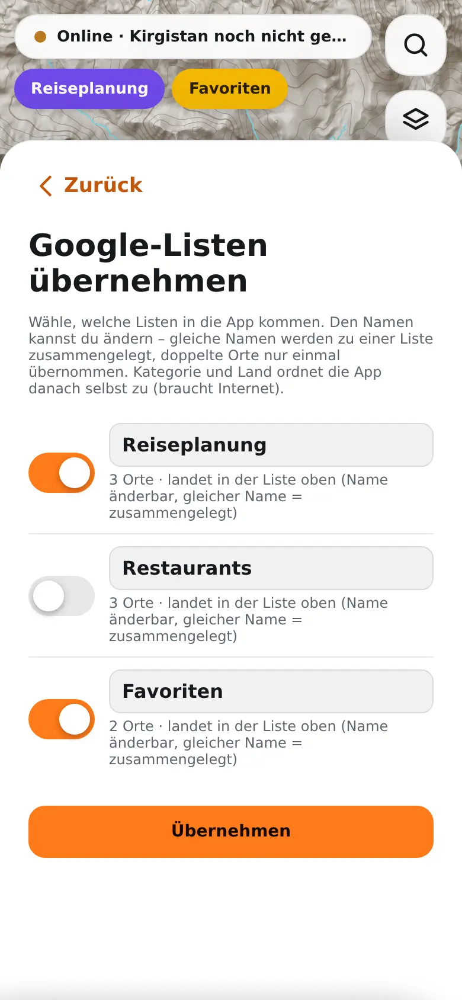
Google-Maps-Listen übernehmen
- Auf takeout.google.com nur „Gespeichert“ auswählen und exportieren. Google schickt eine ZIP-Datei.
- In der App: Menü → Importieren → die ZIP-Datei (oder einzelne CSV-Dateien daraus) öffnen.
- Die App zeigt alle gefundenen Listen. Gewünschte einschalten, Namen bei Bedarf ändern – gleiche Namen werden zu einer Liste zusammengelegt, doppelte Orte nur einmal übernommen.
- Übernehmen. Mit Internet ordnet die App danach jedem Ort Land und Kategorie zu. Oben links zeigt ein Balken „Orte zuordnen … / …“, wie weit sie ist. Bei vielen Orten dauert das ein paar Minuten und geht beim nächsten Start weiter, falls das Netz weg ist. Passt eine Kategorie nicht, einfach umsortieren.
Auch GPX-Dateien aus anderen Apps landen über Importieren in „Meine Orte“. Dateien aus dieser App behalten Liste, Kategorie und Notiz.
10Teilen & Verbindungen
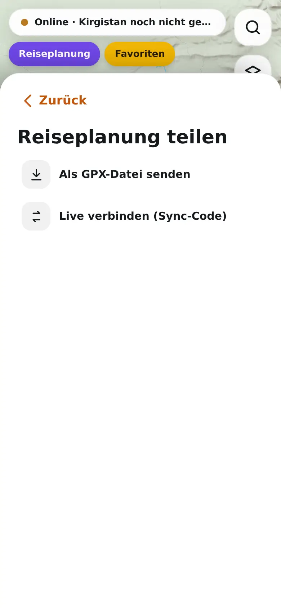
Teilen geht an vielen Stellen: einen einzelnen Ort im Kärtchen, ein Land (aufklappen → „… teilen“), eine ganze Liste, eine Kategorie, eine Auswahl oder im Menü unter Listen Alles teilen. Danach wählst du:
- Als GPX-Datei senden – einmalig, z. B. per WhatsApp oder Mail. Die andere Person öffnet die Datei in der App unter Importieren. Liste, Kategorie und Notizen kommen mit.
- Live verbinden (Sync-Code) – die Orte bleiben auf allen Geräten gleich. Neue Orte, Änderungen und Löschungen kommen von selbst an.
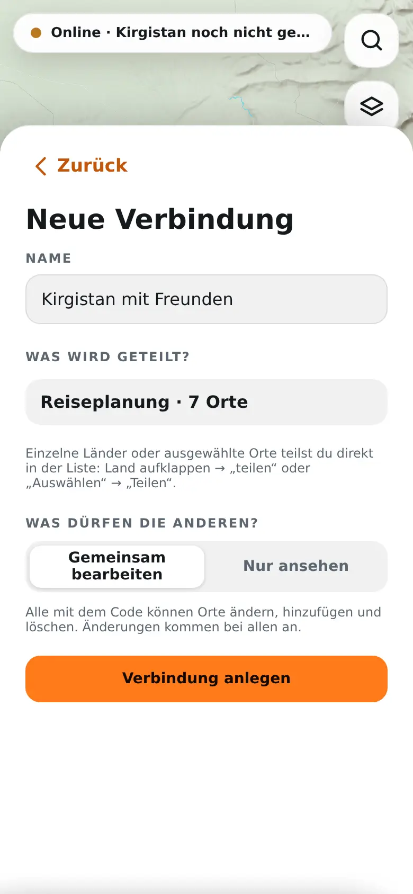
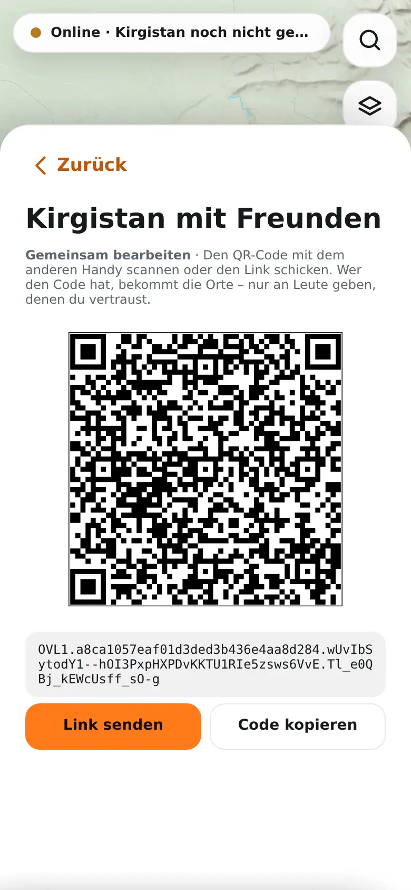
Verbindung anlegen
- Über Teilen → Live verbinden oder im Menü unter Verbindungen → Neue Verbindung.
- Einen Namen geben, z. B. „Island mit Freunden“. Im Menü wählst du den Umfang: Alles (mit Tracks), bestimmte Listen oder Kategorien. Länder oder einzelne Orte teilst du direkt aus der Liste heraus.
- Rechte festlegen: Gemeinsam bearbeiten – alle können hinzufügen, ändern und löschen. Nur ansehen – die anderen bekommen deine Orte und Änderungen, ändern aber nichts.
- Verbindung anlegen. Es erscheint ein QR-Code. Den scannt die andere Person in ihrer App, oder du schickst den Link bzw. den Code.
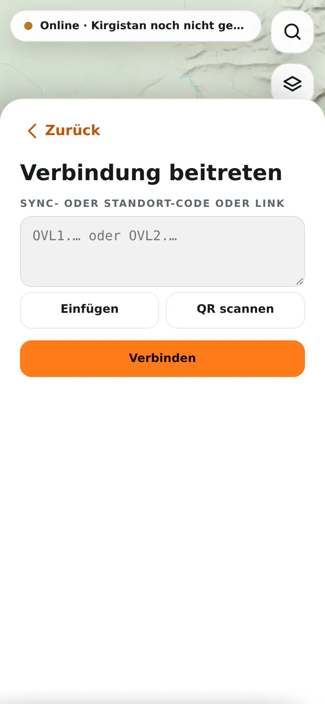
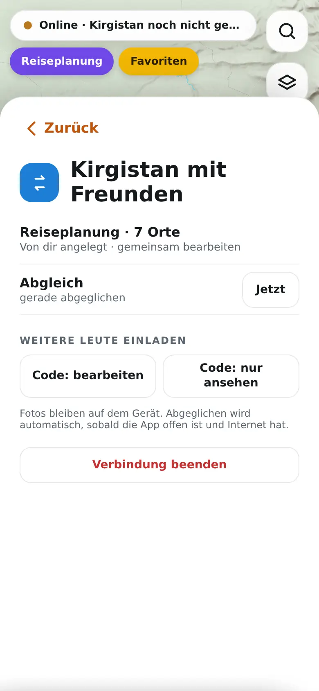
Verbindung beitreten
- Code kopieren und in der App ins Suchfeld einfügen – oder Menü → Verbindungen → Code eingeben.
- QR scannen oder den Code mit Einfügen eintragen, dann Verbinden.
- Gibt es eine Liste mit gleichem Namen schon, fragt die App: zusammenlegen oder getrennt halten.
Was du wissen solltest
- Abgeglichen wird automatisch, wenn die App offen ist und Internet hat – beim Start, alle anderthalb Minuten und kurz nach jeder Änderung. Jetzt in der Verbindung gleicht sofort ab.
- Die Daten liegen verschlüsselt auf dem Server. Den Schlüssel haben nur die Geräte mit dem Code. Trotzdem gilt: Wer den Code hat, sieht die Orte.
- Fotos bleiben auf dem eigenen Gerät und werden nicht abgeglichen.
- Unter Weitere Leute einladen holst du den Code jederzeit wieder – wahlweise mit Bearbeiten-Rechten oder nur zum Ansehen.
- Trennen beendet den Abgleich auf deinem Gerät; die Orte bleiben, wenn du willst. Wer die Verbindung angelegt hat, kann sie für alle beenden.
Standort teilen
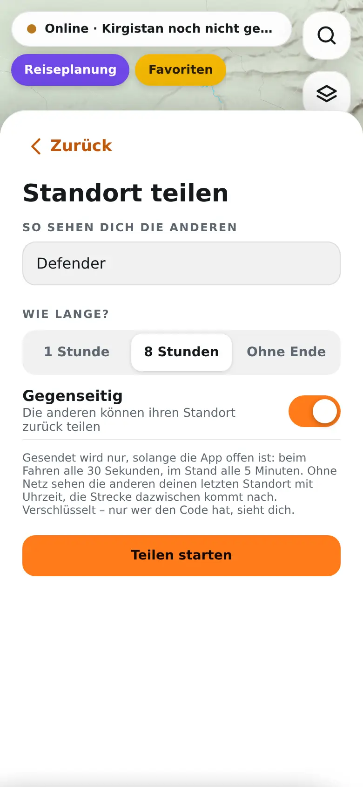
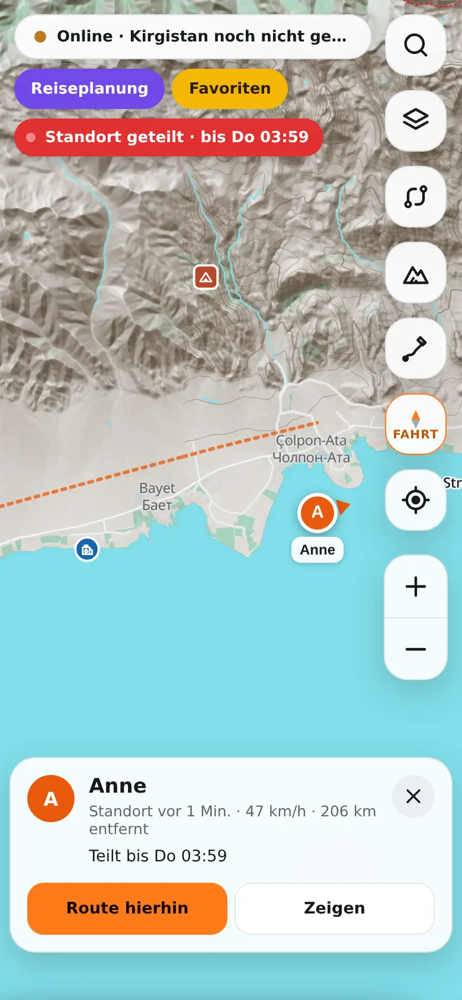
Andere mit der App sehen dich live auf ihrer Karte – praktisch im Konvoi oder wenn ihr getrennt unterwegs seid.
- Menü → Standort teilen → Meinen Standort teilen.
- Namen eingeben (so erscheinst du bei den anderen), Dauer wählen: 1 Stunde, 8 Stunden oder ohne Ende. Mit Gegenseitig können die anderen ihren Standort zurück teilen.
- Teilen starten zeigt einen QR-Code und darunter den Code. Steht die andere Person neben dir, scannt sie den QR-Code. Sonst tippst du Teilen und schickst die Nachricht z. B. per WhatsApp.
Die andere Person (die den Code bekommt):
- In WhatsApp lange auf den Code tippen (die lange Zeichenfolge, die mit OVL2. anfängt) → Kopieren.
- Die Overland-Navi-App öffnen (nicht den Link – der öffnet nur die Webseite).
- Den Code einfach ins Suchfeld einfügen – die App erkennt ihn und verbindet sofort. Alternativ: Menü → Standort teilen → Code von jemand anderem eingeben → Einfügen.
- Die App fragt, ob du deinen Standort auch zurück teilen willst. Danach seht ihr euch gegenseitig auf der Karte.
- Solange du teilst, steht oben auf der Karte ein roter Hinweis „Standort geteilt“. Antippen öffnet die Gruppe – dort schaltest du das Teilen aus oder verlässt die Gruppe.
- Die anderen erscheinen als farbiger Kreis mit Anfangsbuchstaben und Namen, beim Fahren mit Richtungspfeil, dazu ihre Strecke der letzten Stunden gestrichelt. Antippen zeigt, wie alt der Standort ist, und bietet Route hierhin.
- Gesendet wird nur, solange die App offen ist – beim Fahren alle 30 Sekunden, im Stand alle 5 Minuten. Bei gesperrtem Handy oder ohne Netz sehen die anderen deinen letzten Standort; wird er älter als 15 Minuten, wird der Punkt grau. Hast du wieder Netz, kommt die Strecke dazwischen nach.
- Alles ist verschlüsselt. Nach Ablauf der Dauer oder beim Ausschalten wird dein Standort vom Server gelöscht.
11Wandern & Touren
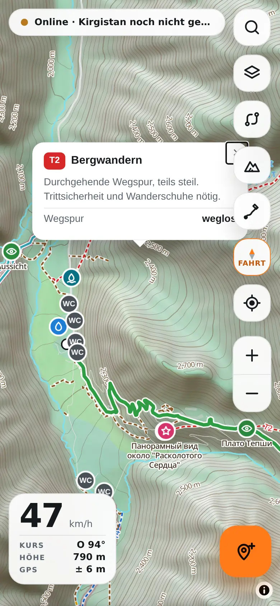
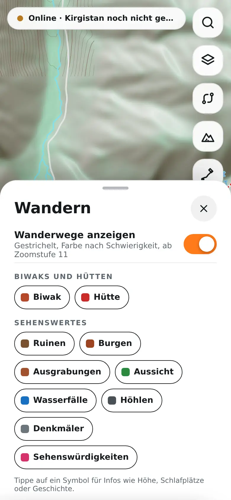
Wanderwege erscheinen ab Zoomstufe 11 gestrichelt; die Farbe zeigt die Schwierigkeit nach der Schweizer SAC-Skala, von T1 (Wanderweg) bis T6 (schwieriges Alpinwandern). Breite farbige Bänder sind markierte Wanderrouten. Einen Weg antippen zeigt Name, Schwierigkeit und Beschaffenheit.
Im Wander-Menü (Berg-Knopf):
- Biwaks und Hütten sowie Sehenswertes (Ruinen, Burgen, Aussichtspunkte, Wasserfälle, Höhlen …) einzeln ein- und ausblenden. Ein Symbol antippen zeigt Höhe, Schlafplätze, Geschichte, Wikipedia.
- Zeige Wege bis: schwierigere Wege ausblenden.
- Touren: Tourenvorschläge auf der Karte.
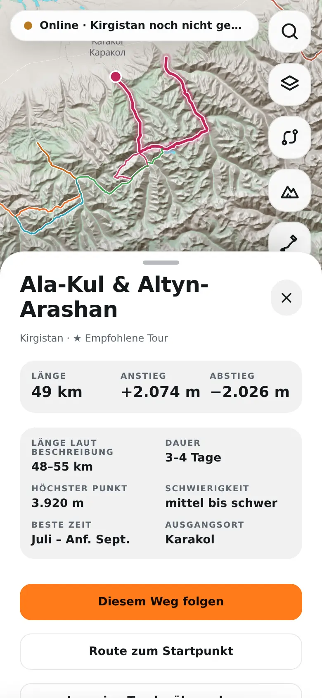
Touren laden
Mit Touren für ein Land laden holst du die bekanntesten Wanderungen eines Landes in die App. ★ bedeutet: von Hand recherchiert, mit Infos zu Anreise, Kosten, Unterkünften und Gefahren. Geladene Touren gehen auch offline. Sehr große Länder wie die USA sind in Gebiete aufgeteilt. Die stehen nicht in der Liste, du findest sie über das Suchfeld, z. B. „Colorado“.
Eine Tour antippen öffnet Länge, Höhenmeter, Höhenprofil, Wegpunkte und Infos. Dann:
- Diesem Weg folgen – Navigation entlang der Tour,
- Route zum Startpunkt – mit dem Auto hinfahren,
- In meine Tracks übernehmen.
12Route zeichnen & Tracks
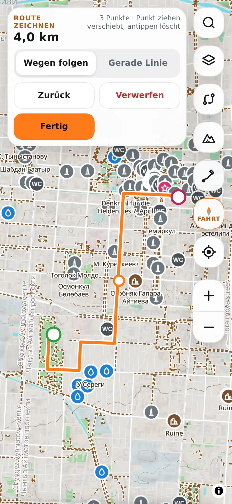
- Auf den Stift-Knopf tippen.
- Nacheinander Punkte auf die Karte tippen. Bei Wegen folgen verbindet die App sie entlang von Straßen und Pisten, bei Gerade Linie direkt.
- Zurück nimmt den letzten Punkt weg, ⇄ dreht die Richtung um.
- Fertig speichert die Strecke als Track.
Einen Track antippen zeigt Länge, Anstieg, höchsten Punkt, Höhenprofil und Abstand zu dir. Dort kannst du Namen, Farbe und Notiz ändern, Diesem Track folgen (Navigation entlang der Linie) oder Route bearbeiten. Alle Tracks stehen im Menü unter Tracks; nach links wischen löscht einen (er landet im Papierkorb).
13Karte einstellen
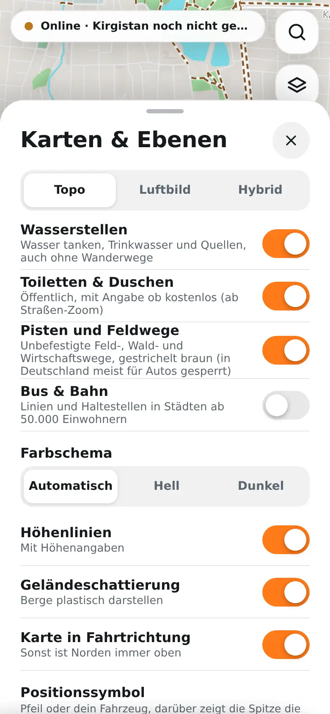
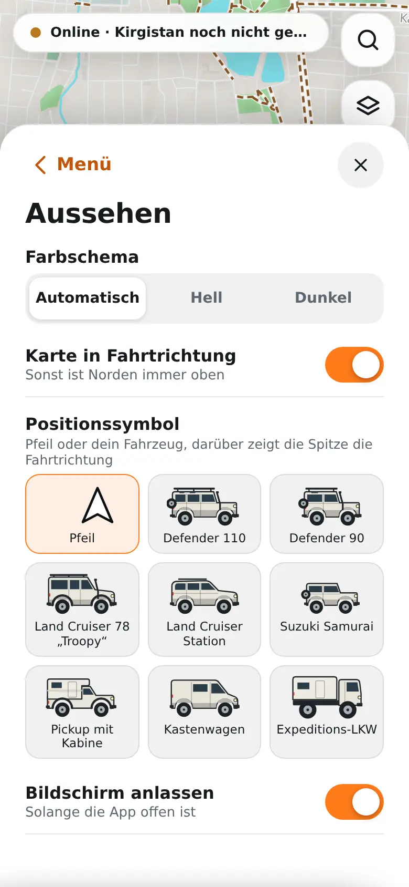
Im Bereich Karte & Ebenen:
- Kartenart: Topo (geht offline), Luftbild oder Hybrid (Luftbild mit Straßen und Namen, braucht Internet).
- Wasserstellen: Trinkwasser, Quellen und Stellen zum Wassertanken.
- Toiletten & Duschen: öffentliche, mit Angabe, ob kostenlos.
- Pisten und Feldwege: unbefestigte Wege, braun gestrichelt. In Deutschland meist für Autos gesperrt, anderswo oft die schönsten Strecken.
- Bus & Bahn: Linien und Haltestellen in größeren Städten.
- Höhenlinien und Geländeschattierung.
Im Bereich Aussehen: Farbschema hell, dunkel oder automatisch, Positionssymbol (Pfeil oder dein Fahrzeug, auch in deiner Farbe), Karte in Fahrtrichtung und Bildschirm anlassen.
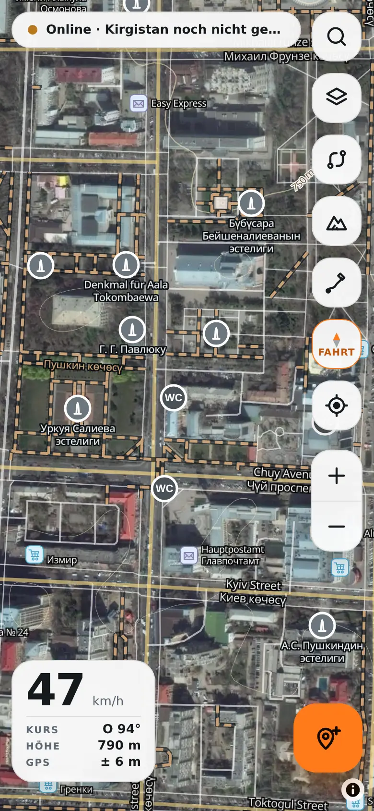
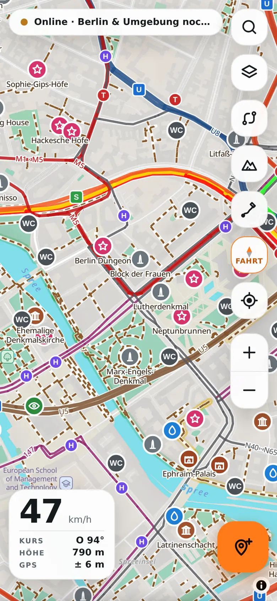
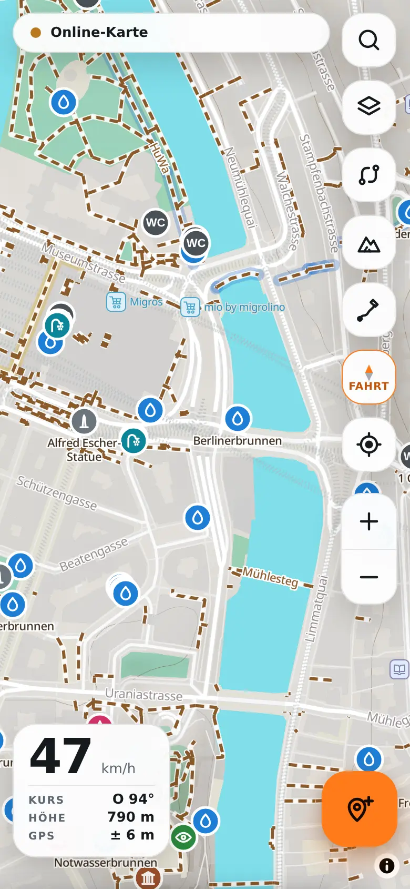
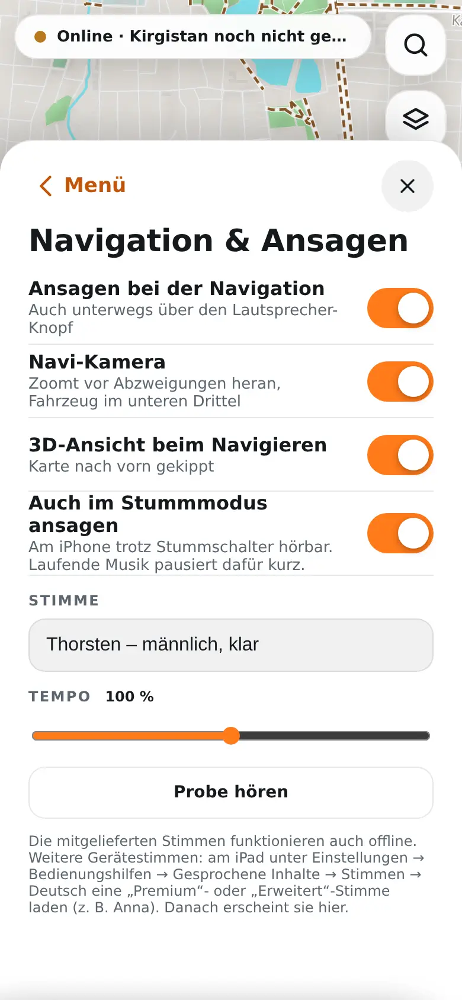
Ansagen
- Ansagen bei der Navigation an oder aus (unterwegs auch per Lautsprecher-Knopf).
- Auch im Stummmodus ansagen: am iPhone trotz Stummschalter hörbar.
- Stimme und Tempo wählen, Probe hören. Die mitgelieferten Stimmen gehen auch offline.
- Navi-Kamera zoomt vor Abzweigungen heran, 3D-Ansicht kippt die Karte nach vorn.
14Tipps & Fragen
Ein Ort wird offline nicht gefunden
Ohne Netz kennt die Suche nur die geladenen Gebiete. Liegt der Ort außerhalb (z. B. Niesky, wenn nur „Berlin & Umgebung“ geladen ist), ein größeres Gebiet oder das ganze Land laden.
Wie bekomme ich die neueste Version?
Die App aktualisiert sich selbst, sobald sie mit Internet geöffnet wird. Neue Funktionen sind meist nach dem zweiten Öffnen da (App ganz schließen und wieder starten). Die Versionsnummer steht ganz unten im Menü.
Der Standort ist ungenau oder springt
Ein paar Sekunden unter freiem Himmel warten; die Genauigkeit steht im Tacho („GPS ± 6 m“). Am iPad ohne SIM-Karte (nur WLAN) gibt es kein eingebautes GPS.
Es kommen keine Ansagen
Lautstärke prüfen, im Menü unter Navigation & Ansagen → Ansagen bei der Navigation einschalten und am iPhone Auch im Stummmodus ansagen. Die App muss im Vordergrund sein.
Der Speicher wird knapp
Nicht mehr benötigte Gebiete unter Offline-Karten löschen. Große Länder wie Deutschland können mehrere Gigabyte belegen, kleinere Ausschnitte viel weniger.
Woher kommen die Daten?
Karte, Wege, Orte und Straßennetz kommen von OpenStreetMap, von Freiwilligen erstellt und vierteljährlich aktualisiert. Fehlt etwas oder stimmt etwas nicht, kann es jeder auf openstreetmap.org verbessern. Die Höhen kommen von Mapterhorn, Bus & Bahn von Transitous. Alle Angaben ohne Gewähr – vor Ort zählt, was die Schilder sagen.
↑ nach oben